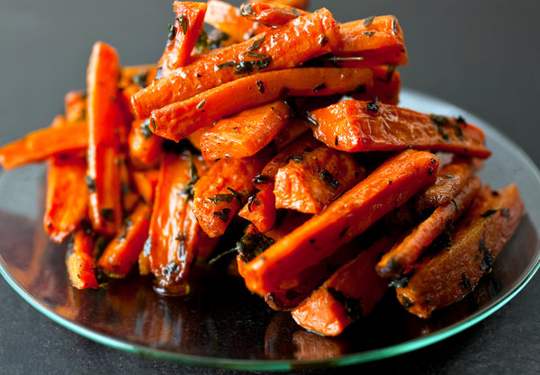

Air Fryer Sweet and Spicy Roasted Carrots

Quick and tasty spicy roasted carrots
These tender and roasted carrots cooked in the air fryer can be on your table in less than half an hour.
Ingredients
- 1 serving cooking spray
- 1 tablespoon butter, melted
- 1 teaspone grated orange zest
- 1/2 pound baby carrots
- 1 pound carrots, peeled
- 2 tablespoons salted butter, melted
- 2 cloves garlic, minced
- ½ teaspoon garlic powder
- salt and ground black pepper to taste
- 1 tablespoon minced fresh parsley (Optional)
Directions
- Preheat the oven to 400 degrees F (200 degrees C). Line a baking sheet with parchment paper.
- Slice carrots on the diagonal into 1/4-inch slices and place into a bowl. Drizzle with butter and stir in fresh garlic, garlic powder, salt, and pepper. Spread onto the baking sheet in an even layer.
- Roast in the preheated oven until carrots are lightly caramelized and soft, 20 to 22 minutes. Sprinkle with parsley.